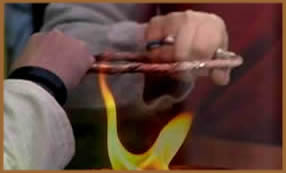
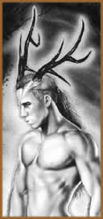
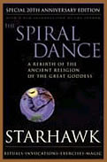

Também conhecida por Religião
da Deusa e Antiga Religião, a Wicca é
uma filosofia de origem pré-cristã baseada no princípio
de criação feminino, nos ciclos da natureza, como
as fases lunares e as quatro estações, revivendo
o culto à Grande Deusa e aos Deuses Antigos. Também
inclui várias modalidades de magia e rituais que buscam
a harmonização pessoal.
Para
seus adeptos, a Wicca é considerada uma religião.
Devido a popularidade que atingiu nos últimos anos, várias
hipóteses são criadas; desde sua origem até
a forma como é praticada atualmente. Portanto, as definições
são amplamente maleáveis e a Wicca torna-se um tema
relativamente incerto.
O termo Wicca possui provavelmente duas
origens. A primeira está ligada a palavra saxônica
Witch, que significa dobrar, moldar
ou girar. A segunda origem é relativa a raiz germânica
da palavra Wit, que significa saber ou sabedoria.
Portanto, deduze-se que Wicca pode significar moldar a sabedoria.
É neste conceito que reside sua essência: moldar
(adaptar e utilizar) o conhecimento universal em próprio
benefício, sem prejudicar a ninguém. Porém,
a palavra ainda carrega uma conotação negativa e
errônea, sendo associada ao satanismo, magia destrutiva
e cultos ou seitas opositoras ao cristianismo de um modo geral.
A Wicca e os Celtas
O conceito de Magia Wicca que se conhece atualmente,
surgiu com os Celtas no período neolítico; nas regiões
da Irlanda, Inglaterra e País de Gales, atingindo posteriormente
a Itália e a França. Os Celtas surgiram por volta
de 2 mil anos antes de Cristo e provavelmente tiveram origem entre
os povos indo-europeus da Ásia. Apesar do povo celta ter
se espalhado por terras tão distantes, seus costumes não
se fragmentaram. Pois o idioma, a arte e a religião sedimentavam
a base cultural.
A raiz filosófica-espiritual dos celtas
era baseada no Druidismo, uma religião politeísta
que reverenciava duas divindades principais: a Deusa Mãe
(chamada de Ceridwen), que representa a criação
e a fecundação onde todo o universo se originou;
e seu filho, o Deus Cornífero (chamado de Cernunos),
o pólo masculino que representa a fertilização.
A única forma de alcançar as divindades era mantendo
uma estreita relação com a natureza. Até
mesmo o calendário era orientado através da natureza.
Os celtas realizavam festivais ritualísticos celebrando
suas divindades, praticavam a agricultura e a cura através
das ervas.
Na organização social Celta, os Druidas
eram os sacerdotes, guardiões das tradições,
cultura e teologia. A classe sacerdotal era dividida entre homens
e mulheres. Mas a cultura era essencialmente matriarcal. A iniciação
nos mistérios druídicos durava em média 20
anos e os ensinamentos eram transmitidos oralmente, pois temiam
que a palavra escrita pudesse se tornar veículo de Magia
incontrolável. Ao se espalhar pela Europa, os celtas levaram
suas crenças nativas que se combinaram ao conjunto de crendices
local, dando origem ao conceito primitivo da Wicca.
Pagãos
& Cristãos
Paganismo é o termo usado para definir as
religiões oriundas do período pré-cristão.
Assim, as práticas pagãs se desenvolveram durante
séculos. Até que em 330 d.C, o cristianismo passou
a ser imposto aos povos de todo o mundo. As práticas pagãs
foram consideradas heréticas e toda a religiosidade pré-cristã,
bem como seus adeptos, tornaram-se alvos da intolerância
católica.
A
Igreja deturpou a real significação da crença
pagã e a propagou como um culto demoníaco. Por exemplo,
a imagem do demônio comum entre os cristãos, é
um homem com chifres e patas de bode; muito semelhante à
imagem do Deus Cornífero. Este é um forte indício
de que a Igreja católica transformou a imagem de divindades
anteriores ao cristianismo em símbolos maléficos.
Assim, o sentido original assumiu um caráter negativista
e destrutivo. Infelizmente, esta conotação se fortaleceu
ao longo do tempo, e tudo que estivesse relacionado à bruxaria
e Wicca, era visto como uma forma de anticristianismo. Este conceito
errôneo foi se diluindo recentemente, à medida que
estudos sérios e imparciais sobre as culturas pré-cristãs
foram sendo divulgados.
Nesse período, certa de 5 milhões
de mulheres foram queimadas, acusadas de bruxaria. Com isso a
Igreja conseguiu conter o crescente poder que a imagem feminina
estava adquirindo ao longo dos séculos, diante da chamada
Deusa. Por conseqüência disso, foi gerada
essa nossa sociedade masculinizada em quase todos os segmentos.
Isso só veio a se alterar nos últimos anos, mesmo
assim muito lentamente.
Wicca no Século
XX
Um dos primeiros registros da utilização
da palavra Wicca no século XX, ocorreu em 1921 quando foi
publicado o livro The Witch Cult in Western Europe, da
antropóloga Margaret Murray. Nesta
obra, a autora relata os cultos pagãos do período
pré-cristão que ainda eram cultivados em diversas
partes da Europa. Em 1948, Robert Grave publicou The White
Goddess. Após três anos, quando a última
lei contra as práticas pagãs foi revogada, Gerald
Gardner publicou o famoso Witchcraft Today. A consolidação
da literatura wiccaniana ocorreu em 1979, com a publicação
de Spiral Dance (com o título em português
A Dança Cósmica das Feiticeiras) da autora
Starhawk. Esta obra se tornou o livro sobre Wicca mais lido em
todo o mundo. A partir daí, houve uma explosão de
livros e artigos relacionados à práticas e crenças
pagãs. Assim, a Wicca ganhou notoriedade na sociedade moderna
ocidental, e ficou evidente que a bruxaria havia sido a crença
religiosa predominante entre os antigos europeus; havia resistido
a supressão e sobrevivido aos tempos modernos.
Atualmente, acredita-se que exista em torno de
12 milhões de neopagãos espalhados por todo o mundo.
Sendo 250 mil nos Estados Unidos. Uma parte da população
da Islândia é adepta do Asatru; uma variação
da Wicca. Vários grupos se organizam e compõem um
forte elo de divulgação por diversas partes do planeta.
Assim, em todo mundo renasce a crença na Deusa e na Antiga
Religião.
Por
Spectrum